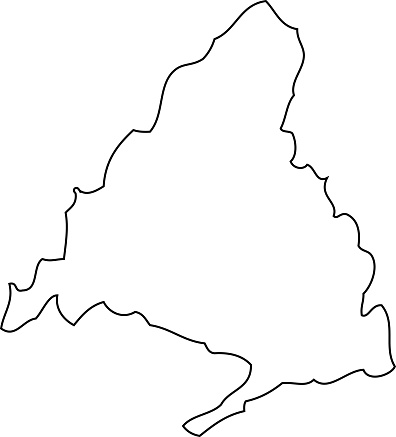

Esta es la página de recuerdos de Abril y Miguel. Aprobechando este maravilloso día y ya que hablamos del concepto de hacer un mapa, he decidido hacer uno mas o menos decente con los conceptos de web que tengo(se que no esta muy pro pero le he metido todo el esfuerzo que podia jsjsj) aun asi espero que te guste mucho y que disfrutes de este viaje :D.